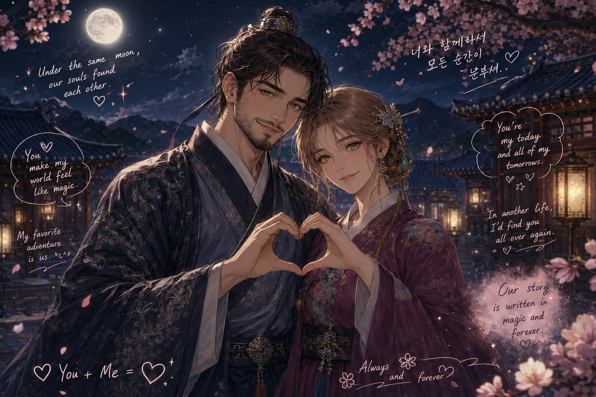

Not so long ago, I felt empty. Everything I loved had stopped feeling touchable. Then a whole world switched on. The puzzles. The heartache. The romance that keeps making me look over at my husband and realise he's my real-life K-drama lead. And being all the way here, the second I press play.
⚠ Spoilers ahead. I write like I've already watched it. Fair warning.
Because sixteen hours of a world that starts, means something, and actually ends did what rest couldn't. Every thread tied off. Every piece fitting. For a brain that never stops running the pattern, a story that resolves is the closest thing to putting it down. I started at Christmas 2024. I haven't stopped. I just started taking notes, and built this.
These are release years, the years each show was made. I only started watching at Christmas 2024, then went backwards through a decade. One from 2014. A whole stack from right now. I go back for the good older ones. Tap any poster to open it up.
Every actor, every show, wired together. Gold nodes are the actors I've seen in more than one drama, the knots where the web pulls tight. Drag a node, throw it, watch the rest follow. Scroll to zoom, drag the empty space to pan.
Every actor you've collected, and the roles behind them. The posters in your log are marked; the faded ones are shows you haven't watched, rabbit holes still open. Search a name, filter, or sort by who ties your web together most.
Every pin is a real place a drama was filmed. Drag the map, zoom in, click a pin for the scene that was shot there. Then hit Look around here to stand in the real spot. Rose pins are Korea; blue pins are the ones abroad.
Confession: I'm not studying Korean. Not yet.
But I can't get through an episode without stopping to look something up: a feeling English has no word for, a family structure that made no sense to me, a crisis every character seems to remember. So this isn't vocabulary I'm memorising. It's everything the dramas made me want to understand about Korea: its culture, its history, and the way the language actually works.
The rabbit holes, sorted onto shelves. Pick one.
I'm not formally learning the language yet. The Korean here is a landmark to notice in passing. This is what the dramas sent me to find out. Corrections and additions always welcome.